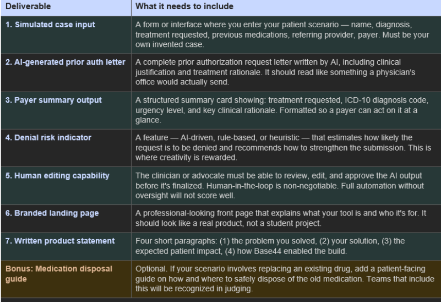
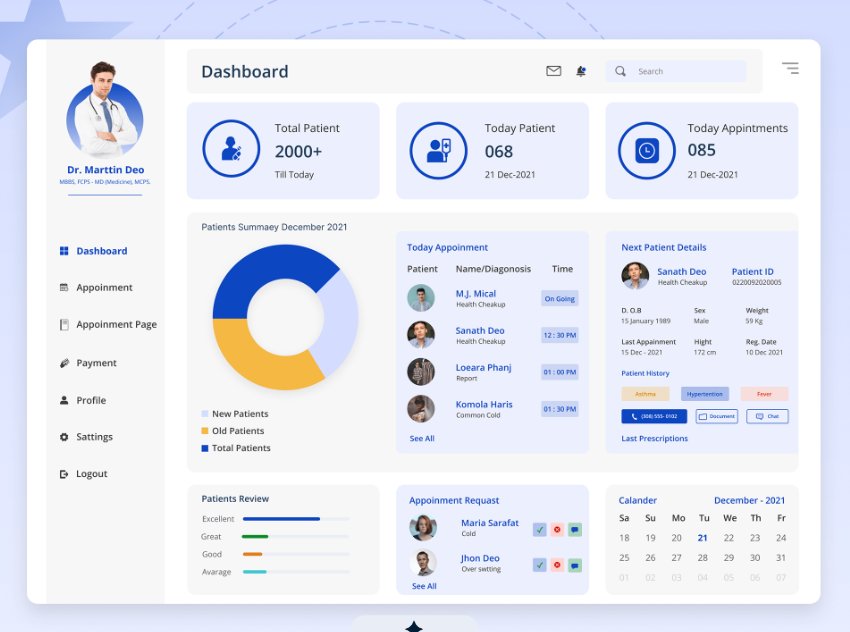
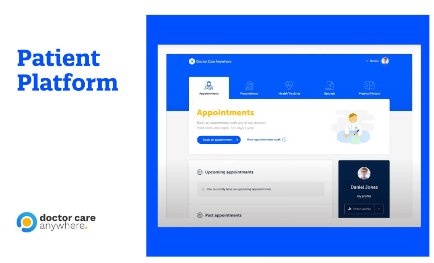
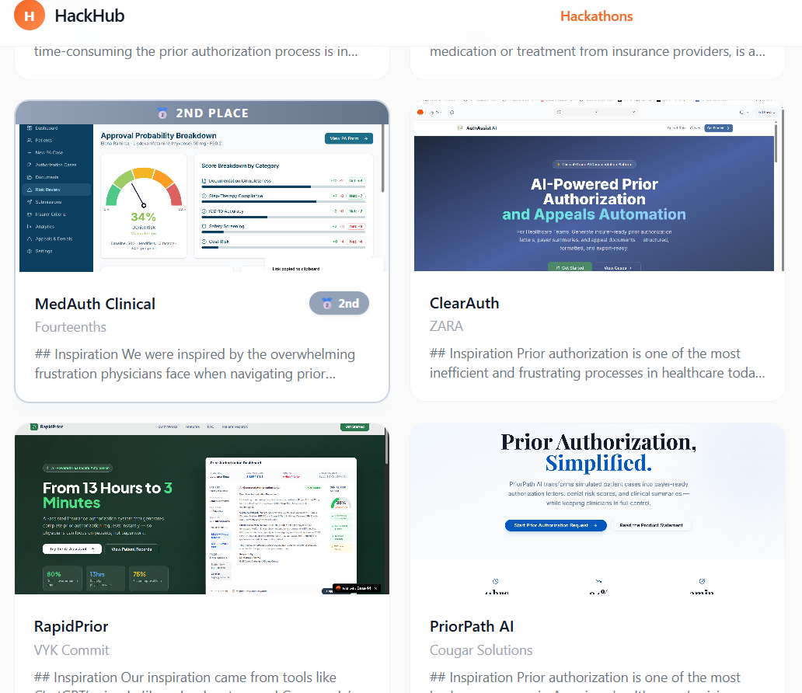

MedAuth Clinical
An AI-assisted prior authorization platform that helps physicians generate payer-ready ADHD medication requests while giving patients clearer approval updates.
The Story
The most expensive part of prior authorization is often the preventable mistake.
Physicians spend roughly 20% of their workweek, or about 13 hours per week, on prior authorization work. Under that pressure, requests become error-prone: incomplete documentation, unclear clinical justification, missed insurer-specific criteria, and avoidable back-and-forth. ADHD medications are especially vulnerable because they often require strict step-therapy proof, controlled-substance safety checks, and clear evidence that prior treatments failed or caused side effects.
MedAuth Clinical was built to move that work upstream. Instead of waiting for a payer to reject a weak packet, the platform helps physicians prepare a stronger request before submission.
Before
Clinics spend hours rewriting letters, navigating payer portals, chasing documentation, and responding to preventable denials.
Product Move
Use AI to extract clinical fields, generate authorization letters, score denial risk, and show the physician exactly what to strengthen.
After
Physicians keep clinical control while patients get faster, clearer movement through the authorization process.
How might we reduce preventable ADHD medication authorization delays without removing physician oversight from a high-stakes clinical workflow?
REQUIREMENTS
I translated judging requirements into a product checklist that could become a working workflow
The hackathon deliverables forced the product to be more than a landing page. It needed simulated case input, an AI-generated prior authorization letter, payer summary output, denial-risk scoring, human editing, a branded front page, and a written product statement. The bonus patient medication-disposal guide became an opportunity to make the patient portal more useful and differentiated.

Physician Workflow
Input a patient scenario, upload supporting documents, generate a PA letter, and review a payer-ready summary.
Risk Indicator
Estimate denial risk with weighted factors instead of a vague AI confidence score.
Patient Safety
Include medication disposal guidance and plain-language authorization updates for patients.
SPEAKING TO USERS
I designed for two audiences with very different information boundaries
The core user is the physician or clinical staff member preparing the authorization request. They need clinical detail, insurer criteria, risk scoring, editable AI output, and clear next steps. The patient needs the opposite: plain-language progress, medication guidance, safety information, and reassurance without exposing internal denial scoring or insurer logic.
This split shaped the product architecture. MedAuth Clinical became a dual-portal system: a physician-facing workspace for clinical operations and a patient-facing companion for transparency.
Needs Completeness
Diagnosis, ICD-10 codes, prior trials, treatment rationale, safety checks, and payer criteria have to be visible before submission.
Needs Clarity
Patients need to know where their request stands, what medication they are taking, and what safety steps matter.
Needs Separation
Patients should never see internal risk scoring, clinical notes, missing documentation flags, or payer strategy.
TEST CASE
The demo case made the workflow specific enough to design around real constraints
The physician test case centered on Elena Ramirez, 29, diagnosed with ADHD Combined Type, ICD-10 F90.2, requesting Lisdexamfetamine (Vyvanse) 50 mg daily through LoneStar Health Advantage. The authorization risk came from the medication being a brand-name controlled substance, the need to document two prior medication trials, side-effect discontinuation, cardiac and substance-use screening, and potential PHQ-9 or GAD-7 requirements.
Using one detailed case helped the team avoid generic healthcare UI. Every page had to answer: does this help a physician make Elena's request more complete, more defensible, and easier for the payer to understand?
Elena Ramirez
29-year-old patient with ADHD Combined Type and persistent focus, task-completion, and workplace performance issues.
Vyvanse 50 mg
Requested after Concerta was discontinued due to appetite suppression and insomnia, and Strattera did not control symptoms.
LoneStar Health Advantage
Requires step-therapy evidence, safety screening, clear rationale, and documentation for controlled-substance approval.
INTERFACE INSPIRATION
I used healthcare dashboard references to shape the Base44 workflow hierarchy
The image below is inspiration, not the final MedAuth prototype. I used healthcare dashboard patterns to think through how the Base44 build should organize navigation, patient context, status indicators, review actions, and next-step hierarchy before translating those ideas into the working product.

Auto Extraction
Patient summaries are parsed into diagnosis, medication, symptoms, prior treatments, side effects, ICD-10 codes, and insurer requirements.
Human Editing
Physicians can manually correct invalid information before any AI output becomes final.
Payer-Ready Packet
The system produces an authorization letter, structured summary card, and denial-risk recommendations.
AI RISK MODEL
I framed AI as a scoring and strengthening layer, not a black-box approval promise
The denial-risk indicator starts from a 50% baseline, then applies weighted factors from 1 to 5 points. Positive factors lower risk and risk factors increase it. Each point changes denial risk by 4%, with a floor of 0% and a cap of 100%. This makes the risk score explainable: physicians can see what helps, what hurts, and which missing items matter most.
For Elena's case, strong factors include documented ADHD diagnosis, two prior medication trials, and clinical rationale for Vyvanse. Risk factors include brand-name medication cost, controlled-substance requirements, missing safety documentation, and possible payer requests for PHQ-9, GAD-7, urine drug screen, or cardiac history confirmation.
Step Therapy Evidence
Concerta and Strattera trials provide a stronger rationale for requesting Vyvanse.
Safety Screening Gaps
Missing cardiac, substance-use, or mental-health screenings can trigger revisions.
Strengthen Packet
The dashboard recommends concrete fixes before submission instead of simply reporting a risk score.
PATIENT PORTAL INSPIRATION
I separated patient-facing clarity from physician-only authorization logic
The image below is also a visual reference, not a final MedAuth prototype screen. It helped shape the patient-side direction: a calmer portal with clear status, plain-language medication information, and fewer back-office details than the physician workspace.

Approval Tracker
Patients can see submitted, insurance reviewing, additional information requested, decision pending, approved, or denied.
Medication Guidance
Plain-language instructions explain how to take the medication, side effects, storage, and disposal.
Less Anxiety
Clear updates help patients feel their treatment is moving forward instead of disappearing into an insurance portal.
PRODUCT TRADEOFFS
The hardest decision was balancing automation with clinical accountability
Full automation would look impressive in a demo but would be unsafe in practice. Prior authorization involves clinical nuance, compliance, payer-specific rules, and patient safety. I positioned AI as a drafting, extraction, and risk-identification assistant. The physician stays accountable for review, correction, and approval.
Drafting & Extraction
AI can reduce repetitive paperwork by extracting fields and generating first-pass letters.
Clinical Rationale
Physicians must validate that the generated justification matches the patient story.
Patient Boundaries
Patient screens should never expose denial-risk logic, insurer strategy, or internal documentation gaps.
BASE44 BUILD
Base44 let us build an end-to-end prototype fast enough to test the full workflow
Base44 enabled the team to rapidly generate functional screens, backend-style logic, navigation, workflow automation, and AI-generated document flows using structured prompts. The inspiration screens shaped hierarchy and tone, while Base44 turned those patterns into role-based pages and workflow logic. Instead of spending the hackathon on basic scaffolding, we focused on clinical accuracy, insurer criteria, user experience, and the product story.
The platform helped us build multiple pages quickly: role-based login, physician dashboard, authorization case intake, risk review, payer summary, patient portal, medication guidance, and approval tracking. That speed mattered because the value of MedAuth Clinical only becomes clear when the full physician-to-patient workflow is visible.

LEARNINGS & IMPACT
The strongest impact was turning prior authorization from reactive correction into proactive preparation
By reducing preventable denials and accelerating approvals, MedAuth Clinical can shorten the time patients wait for essential medications. For ADHD patients, faster access can support focus, daily functioning, and quality of life. For physicians, fewer avoidable revisions means more time spent on patient care instead of administrative rework.
2nd Place
Recognized in the University of Houston FITP Hackathon for a complete clinical authorization workflow.
13 Hours/Week
Addressed the administrative burden physicians spend on prior authorization paperwork.
Dual Portal
Created separate experiences for physician operations and patient-safe status transparency.
AI With Oversight
Used AI to draft, score, and strengthen requests while preserving human-in-the-loop review.
Next
The next version would expand payer logic, document validation, and patient support
Next, I would expand MedAuth Clinical to support more conditions, insurers, and medication classes. I would add real-time insurer API connections where available, automated documentation validation, source-linked clinical evidence, denial-pattern analytics, refill reminders, safety education modules, and secure messaging. The long-term vision is a universal prior authorization platform that standardizes packet readiness while keeping physicians in control.
Reflection
MedAuth Clinical helped me think more carefully about AI in high-stakes workflows
This project sharpened how I think about product management in regulated spaces. The best AI product was not the one that automated the most; it was the one that reduced ambiguity, made risk explainable, preserved clinical review, and improved the experience for both physicians and patients. That is the difference between an impressive demo and a responsible workflow.